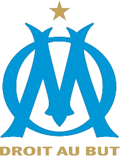

My Profile

Welcome to my Website
My name is KylIan Bouchoucha, I'm 21 years old and I do a Master Msc in Corporate Finance in Kedge Business School
You will find below more detail about me...
Welcome to my Website
My name is KylIan Bouchoucha, I'm 21 years old and I do a Master Msc in Corporate Finance in Kedge Business School
You will find below more detail about me...

Before Kedge BS, I was in Marseilleveyre Highschool. There, I completed my junior and senior years in social economics, having a strong attraction to this field of study
After graduating from my baccalauréat ES with honors, I decided to continue my studies at Kedge Business School. I'm doing the Post Bac Bachelor program. There, I learnt the most important basics of business and then specialized in Banking and Finance in my third year
Then, after obtaining my Master's degree, I decided to move on to the Msc Corporate Finance program, which I'm currently enrolled in.
Football: This sport is a passion I have had since I was really young. During all my childhood with my friends in school and in the club, I was playing football
I am also a big fan of Olympique de Marseille and my favorite player there was Boubakar Kamara: He plays in the same position as me: Central Defender Midfield. But now he plays in Premier League in Aston Villa
House music: I am a huge fan of house music. It's a genre that I got to know not too long ago at a music festival, but I quickly became hooked and now I can't stop listening to it
In this style of music, I really like artists such as Black Coffee, Fred Again, and ANOTR
Internship
Student Contract